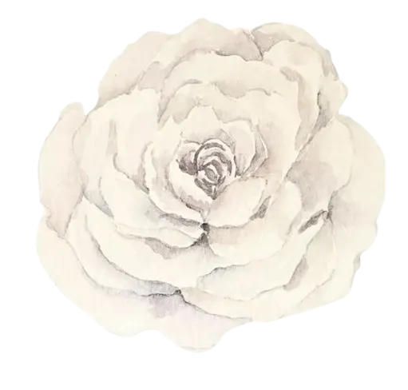
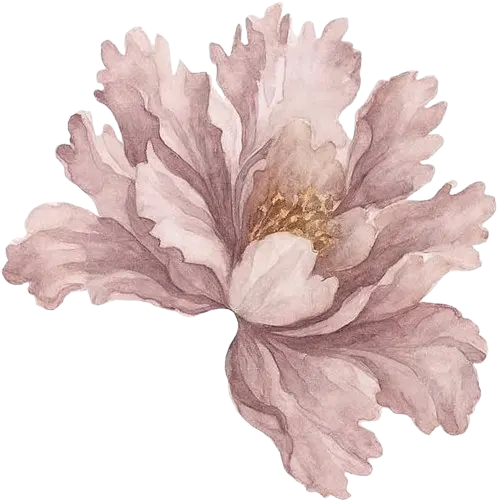

2021
Awal Bertemu
Kami bertemu untuk pertama kalinya tanpa pernah menyangka bahwa pertemuan sederhana itu akan menjadi awal dari segalanya.
Foto
The Wedding Of
Mohon Doa Restu & Kehadirannya

The Wedding Of
Kepada Yth. Bapak/Ibu/Saudara/i
Tamu Undangan
The Wedding of
Memuat tanggal...
Assalamu’alaikum Warahmatullahi Wabarakatuh
Dengan memohon rahmat dan ridho Allah SWT, kami bermaksud menyelenggarakan pernikahan putra-putri kami:

Putri dari
Bapak ... & Ibu ...
Putra dari
Bapak ... & Ibu ...
Save The Date
Simpan ke Kalender
Detail acara dan lokasi ikut tersimpan sebagai catatan pengingat.
Hari
00
Bulan Tahun
Akad Nikah
08.00 – 09.00 WIB
Resepsi
11.00 WIB – Selesai
Memuat lokasi...
Perjalanan Kami
2021
Kami bertemu untuk pertama kalinya tanpa pernah menyangka bahwa pertemuan sederhana itu akan menjadi awal dari segalanya.
2022
Dari obrolan singkat menjadi cerita panjang. Kami saling belajar memahami dan menemukan rasa nyaman satu sama lain.
2025
Dengan restu kedua keluarga, kami mengikat niat baik dalam sebuah lamaran yang hangat dan penuh doa.
2026
Dan kini kami siap memulai babak baru. Kehadiran serta doa Anda menjadi bagian terindah dari hari istimewa kami.
Momen Kami
Ketuk foto untuk memperbesar
Tanda Kasih
Doa restu Anda adalah hadiah terindah bagi kami. Namun bila berkenan memberi tanda kasih, dapat melalui:
1234 5678 90
Atas nama
Nama Penerima
0812 3456 7890
Atas nama
Nama Penerima
Kirim Hadiah
Nama Penerima
Jl. Contoh No. 12, Kelurahan, Kecamatan, Kota, 40123
Konfirmasi Kehadiran
Terima Kasih
Merupakan suatu kehormatan dan kebahagiaan bagi kami apabila Bapak/Ibu/Saudara/i berkenan hadir dan memberikan doa restu.
Wassalamu’alaikum Warahmatullahi Wabarakatuh
Kami yang berbahagia
Nama & Nama
Designed by Wedding Code
Interested in creating your own? Visit our website here.